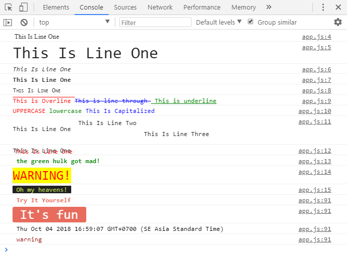

Bạn có thể sử dụng CSS để style cho console.log() trên trình duyệt.
console.log("%cXâu 1 %cXâu 2", "CSS cho xâu 1", "CSS cho xâu 2")
Ví dụ:
console.log("%cThis is a %cConsole.log", "background:black; color:white", "color:red; font-size:25px")
Với các phần khác nhau ngăn cách bằng %c thì có các xâu CSS khác nhau.
Hãy mở console của trình duyệt (F12) và tự kiểm tra.
